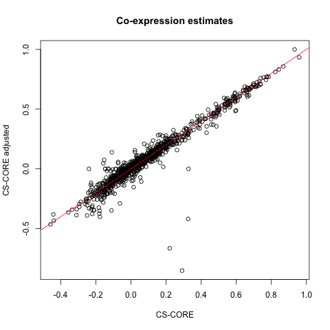
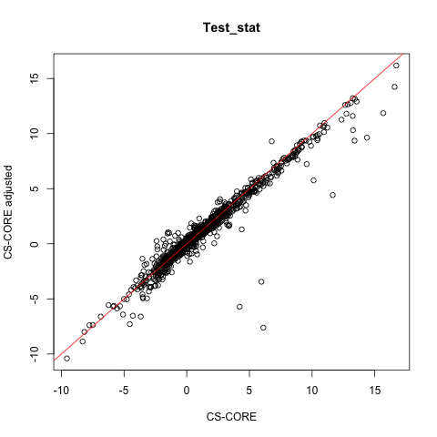

Covariate adjustment
covariate_adjustment.RmdMotivation
The original implementation of CS-CORE does not consider covariate adjustment. For example, in the paper, we assumed
\[ {\bf z_{i}}\sim F_p({\bf \mu}, \Sigma), x_{ij}|z_{ij} \sim \text{Poisson}(s_i z_{ij}) \]
such that the mean \({\bf \mu}\) and the variance-covariance matrix \(\Sigma\) of underlying gene expression are exactly the same for all cells in the population. However, in real data, it is possible that the mean, variance, and co-expression of underlying gene expression could be affected by technical covariates (such as percent.mt) or biological covariates (such as sex) that vary across cell.
New moment-based regressions for covariate adjustment
In June 2025, we added a new feature to CS-CORE that allows adjusting for covariates in co-expression inference. In particular, we adjust for covariates through modelling \({\bf mu}\) and \(\Sigma\) as a function of covariates \(c_{ik}\)’s: \[ {\bf \mu}_{i}={\bf \mu}+\sum_k c_{ik} {\bf \beta_k}, \ \Sigma_{i}=\Sigma +\sum_k c_{ik} {\bf \gamma_k} \] This leads to the following moment-based regression:
\[ x_{ij} = s_i (\mu_j + \sum_k c_{ik} \beta_k) + \epsilon_{ij} \]
\[(x_{ij} - s_i \mu_{ij})^2 = s_i \mu_{ij} + s_i^2 (\sigma_{jj} + \sum_k c_{ik} \gamma_k) + \eta_{ij}\] \[(x_{ij} - s_i \mu_{ij})(x_{ij'} - s_i \mu_{ij'}) = s_i^2 (\sigma_{jj'} + \sum_k c_{ik} \theta_k) + \xi_{ijj'},\]
where \(\mu_{ij} = \mu_j + \sum_k c_{ik} \beta_k\). These allow adjusting for \(K\) covariates \(c_{ik}\)’s for their effects on the underlying gene expression mean (\(\beta_k\)’s), variance (\(\gamma_k\)’s) and covariance (\(\theta_k\)’s).
Demonstration on real data
Here, we demonstrates how to adjust for covariates in CS-CORE with the same dataset as in Getting started.
# wget https://hosted-matrices-prod.s3-us-west-2.amazonaws.com/Single_cell_atlas_of_peripheral_immune_response_to_SARS_CoV_2_infection-25/blish_covid.seu.rds
pbmc <- readRDS('blish_covid.seu.rds')
pbmc <- UpdateSeuratObject(pbmc) # update the obsolete Seurat object
pbmc_B = pbmc[,pbmc$cell.type.coarse %in% 'B']
mean_exp = rowMeans(pbmc_B@assays$RNA@counts/pbmc_B$nCount_RNA)
genes_selected = names(sort.int(mean_exp, decreasing = T))[1:200]
pbmc_B_healthy <- pbmc_B[, pbmc_B$Status == "Healthy"]This dataset comes with detailed cell-level covariates:
colnames(pbmc_B_healthy@meta.data)
#> [1] "orig.ident" "nCount_RNA" "nFeature_RNA" "percent.mt" "percent.rps" "percent.rpl"
#> [7] "percent.rrna" "nCount_SCT" "nFeature_SCT" "SCT_snn_res.1" "seurat_clusters" "singler"
#> [13] "Admission.level" "cell.type.fine" "cell.type.coarse" "cell.type" "IFN1" "HLA1"
#> [19] "Donor.orig" "Donor.full" "Donor" "Status" "Sex" "DPS"
#> [25] "DTF" "Admission" "Ventilated"As an example, we choose to adjust for Sex and
percent.mt. To run CS-CORE with covariate adjustment,
use
CSCORE_result_adj <- CSCORE(pbmc_B_healthy,
genes = genes_selected,
covariate_names = c('percent.mt', 'Sex'))
#> [INFO] Adjust for covariates: percent.mt, Sex
#> [INFO] Variables in the design matrix: percent.mt, SexM
#> [INFO] IRLS converged after 3 iterations.
#> [INFO] Starting WLS for covariance at Thu Jun 26 17:09:48 2025
#> [INFO] 1 among 200 genes have invalid variance estimates. Their co-expressions with other genes were set to 0.
#> [INFO] 0.0854% co-expression estimates were greater than 1 and were set to 1.
#> [INFO] 0.0101% co-expression estimates were smaller than -1 and were set to -1.
#> [INFO] Finished WLS. Elapsed time: 1.8762 seconds.By default, CSCORE extracts the covariates from the
Seurat object and construct a design matrix with scaled and centered
covariates. To understand the detailed impact of covariate adjustment,
we also compare with the results without covariate adjustment.
CSCORE_result <- CSCORE(pbmc_B_healthy, genes = genes_selected)
#> [INFO] IRLS converged after 3 iterations.
#> [INFO] Starting WLS for covariance at Thu Jun 26 17:09:50 2025
#> [INFO] 0.0101% co-expression estimates were greater than 1 and were set to 1.
#> [INFO] 0.0000% co-expression estimates were smaller than -1 and were set to -1.
#> [INFO] Finished WLS. Elapsed time: 1.2249 seconds.
# compare co-expression estimates for a random set of gene pairs
set.seed(42002)
p <- length(genes_selected)
random_pairs <- sample(which(upper.tri(matrix(1:p^2, p, p))), 1000)
plot(CSCORE_result$est[random_pairs],
CSCORE_result_adj$est[random_pairs],
xlab = 'CS-CORE', ylab = 'CS-CORE adjusted',
main = 'Co-expression estimates')
abline(0,1,col='red')
plot(CSCORE_result$test_stat[random_pairs],
CSCORE_result_adj$test_stat[random_pairs],
xlab = 'CS-CORE', ylab = 'CS-CORE adjusted',
main = 'Test_stat')
abline(0,1,col='red')
It seems that the co-expression for most gene pairs are similar with and without covariate adjustment. We recommend users to sanity check this and examine the impact of covariate adjustment on co-expression inference.
Advanced topics
The application above adjusts for covariates in the underlying
expression levels’ mean, variance, and covariance. For users who wish to
have more fine-grained control on the regression models, we provide two
additional parameters: adjust_setting and
covariate_level.
adjust_setting
We provide these two options in CSCORE_IRLS_cpp, which is the function
underlying CSCORE. adjust_setting allows you
to choose which regression model to adjust covariates for. For example,
if adjust_setting=c(mean = T, var = F, covar = T), this is
equivalent to running the following regressions:
\[ x_{ij} = s_i (\mu_j + \sum_k c_{ik} \beta_k) + \epsilon_{ij} \]
\[ (x_{ij} - s_i \mu_{ij})^2 = s_i \mu_{ij} + s_i^2 \sigma_{jj} + \eta_{ij} \]
\[ (x_{ij} - s_i \mu_{ij})(x_{ij'} - s_i \mu_{ij'}) = s_i^2 (\sigma_{jj'} + \sum_k c_{ik} \theta_k) + \xi_{ijj'}, \]
covariate_level
In the adjustment models above, we assume \({\bf z_{i}}\sim F_p({\bf \mu}, \Sigma), x_{ij}|z_{ij} \sim \text{Poisson}(s_i z_{ij})\) and \({\bf \mu}_{i}={\bf \mu}+\sum_k c_{ik} {\bf \beta_k}\). This implies that the underlying mean expression is associated with covariates.
Another possible model is to assume \(\text{Poisson}(s_i z_{ij} + \sum_k c_{ik} {\bf
\beta_k})\), which implies that the covariates operate in the
measurement process, independent of underlying gene expression. Even
though we think the default model is more natural, we allow for this
flexibility by specifying covariate_level = "x". This will
run \[
x_{ij} = s_i \mu_j + \sum_k c_{ik} \beta_k + \epsilon_{ij},
\] and similarly for variance and covariance.